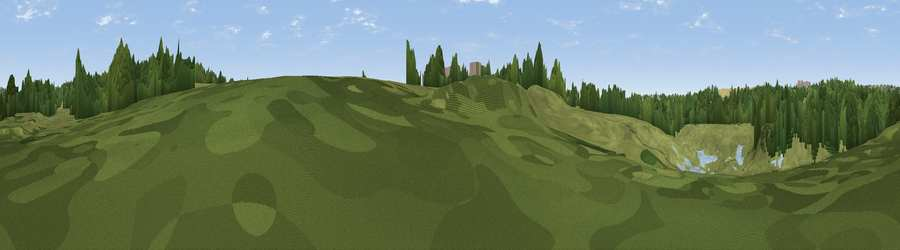

Viewpoint near Heather
#45203 in England · top 97% of its area beats it · near HeatherWhere it is
The exact computed spot (SK 39019 09459). Click the marker for map links.
The view, rendered

A 360° render of this exact spot computed from the terrain model, tree cover and land cover — summer colours, afternoon light, calibrated against photographs of famous viewpoints. Real trees, hedges and buildings will differ in detail.
The panorama
Grey silhouette: terrain skyline in each direction (720 bearings, Earth curvature and refraction included). Dashed green: skyline with trees (+15 m) and buildings (+8 m) as obstacles. Blue strip: how far the ground is visible on each bearing.
Where the view opens
Wedge length = distance to the farthest visible ground on that bearing (vegetation-aware). Rings at 10, 25 and 50 km.
What fills the view
51% grassland · 33% woodland · 10% cropland · 6% water
Angular shares of the visible panorama (visual magnitude), not map area. Landscape diversity 0.49 (0–1 Shannon).
Key numbers
More beautiful places nearby
The staircase of upgrades: each row has a higher view potential than everything closer. Driving times are estimates from straight-line distance, calibrated against real road routing — check an actual route before setting out.
| Place | Direction | Drive | Score |
|---|---|---|---|
| Wellsborough Hill | SSW · 7 km | ~15 min | 23.8 |
| Viewpoint near Thornton | ESE · 8 km | ~15 min | 25.4 |
| Viewpoint near Stanton under Bardon | ENE · 8 km | ~16 min | 65.8 |
| Viewpoint near Stanton under Bardon | ENE · 8 km | ~16 min | 76.0 |
| Viewpoint near Woodhouse Eaves | ENE · 13 km | ~24 min | 77.7 |
| Viewpoint near Mow Cop | NW · 72 km | ~95 min | 80.2 |
| Viewpoint near Little Wenlock | W · 76 km | ~99 min | 84.2 |
| The Wrekin | W · 76 km | ~100 min | 85.0 |
52.68143, -1.42428 · source: osm viewpoint · position refined by local search. Computed location — check access rights before visiting.